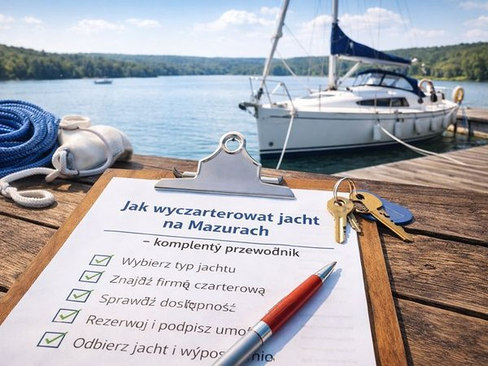

12 stycznia 2026 · 4 min czytania
Czarter jachtu – kompletny przewodnik
Czarter jachtu na Mazurach to jeden z najlepszych sposobów na spędzenie urlopu blisko natury, z dala od tłumów i w swoim własnym tempie. Jednocześnie dla wielu osób — zwłaszcza przy pierwszym rejsie — jest to temat pełen pytań, niepewności i obaw: jaki jacht wybrać, ile to naprawdę kosztuje, jakie formalności trzeba spełnić i jak uniknąć typowych błędów.

W tym poradniku pokazujemy, jak wyczarterować jacht na Mazurach krok po kroku — od wyboru odpowiedniej jednostki, przez koszty i formalności, aż po planowanie trasy i przygotowanie do rejsu. Znajdziesz tu kompletne wprowadzenie do czarteru jachtów na Mazurach oraz odnośniki do bardziej szczegółowych artykułów, które pomogą Ci dobrze przygotować się do wyprawy.
Na czym polega czarter jachtu?
Czarter jachtu to czasowe wynajęcie jednostki pływającej — najczęściej na kilka dni lub tydzień — wraz z podstawowym wyposażeniem. W zależności od rodzaju jachtu i oferty armatora możesz czarterować jednostkę:
- żaglową lub motorową,
- z patentem lub bez (w określonych przypadkach),
- na krótki weekendowy wypad lub dłuższy rejs.
Jeśli zastanawiasz się, jaki typ jachtu będzie najlepszy dla Ciebie, zacznij od artykułu:
Jaki jacht wybrać na Mazury? – para, rodzina, grupa
Krok 1: Wybór odpowiedniego jachtu
Jednym z najczęstszych błędów przy czarterze jest wybór jachtu „na styk” — zbyt małego lub niedopasowanego do załogi. Przy wyborze warto wziąć pod uwagę:
- liczbę osób na pokładzie,
- doświadczenie sternika i załogi,
- komfort, jakiego oczekujesz,
- sposób spędzania czasu (aktywnie czy spokojnie).
Osobnym tematem jest decyzja, czy wybrać jacht żaglowy czy motorowy, ponieważ oba rozwiązania oferują zupełnie inne doświadczenia z rejsu.
Jacht żaglowy czy motorowy – który wybrać?
Krok 2: Ile kosztuje czarter jachtu?
Cena podawana w ofercie czarterowej rzadko jest jedynym kosztem, jaki poniesiesz podczas rejsu. Poza samą opłatą za wynajem jachtu trzeba uwzględnić m.in.:
- kaucję,
- paliwo,
- opłaty portowe,
- sprzątanie końcowe,
- ewentualne ubezpieczenie kaucji.
Szczegółowe zestawienie wszystkich kosztów — także tych, które często są pomijane w ofertach — znajdziesz tutaj:
Ile kosztuje czarter jachtu na Mazurach – wszystkie ukryte koszty
Krok 3: Kaucja, ubezpieczenie i odpowiedzialność
Kaucja to temat, który budzi najwięcej emocji u osób czarterujących jacht po raz pierwszy. Warto wiedzieć:
- kiedy kaucja jest pobierana i zwracana,
- za co odpowiada czarterujący,
- jakie szkody pokrywa ubezpieczenie,
- czy warto wykupić ubezpieczenie kaucji.
Te kwestie szczegółowo omawia artykuł:
Kaucja, ubezpieczenie i odpowiedzialność przy czarterze jachtu
Krok 4: Co zabrać na rejs po Mazurach?
Na jachcie liczy się przestrzeń, dlatego pakowanie „na wszelki wypadek” szybko okazuje się złym pomysłem. Warto wcześniej przygotować listę rzeczy, które faktycznie będą potrzebne:
- odpowiednia odzież,
- obuwie na pokład,
- dokumenty,
- podstawowe wyposażenie osobiste.
Gotową, praktyczną checklistę znajdziesz tutaj:
Co zabrać na rejs po Mazurach
Krok 5: Bezpieczeństwo i najczęstsze błędy
Mazury są akwenem stosunkowo bezpiecznym, ale wiele problemów wynika nie z pogody, lecz z braku przygotowania i doświadczenia. Do najczęstszych błędów należą:
- niedoczytanie umowy,
- zbyt ambitny plan rejsu,
- lekceważenie zasad bezpieczeństwa.
Zanim wypłyniesz, koniecznie przeczytaj:
Najczęstsze błędy przy czarterze jachtu
Bezpieczeństwo na jachcie – podstawowe zasady
Krok 6: Planowanie rejsu i wybór trasy
Dobrze zaplanowany rejs to spokojniejsza głowa i więcej przyjemności z żeglugi. W planowaniu warto uwzględnić:
- długość czarteru,
- tempo rejsu,
- miejsca noclegowe,
- możliwości zmiany planów.
Pomogą Ci w tym artykuły:
Szlak Wielkich Jezior Mazurskich – przewodnik
Propozycje tras na rejs – weekend, tydzień czy dłużej?
Najlepsze miejsca do nocowania jachtem
Jak zaplanować rejs dzień po dniu
Krok 7: Kiedy najlepiej żeglować po Mazurach?
Termin rejsu ma ogromny wpływ na jego charakter. Inaczej wygląda żeglowanie w szczycie sezonu, inaczej w maju czy we wrześniu. Warto wziąć pod uwagę:
- natężenie ruchu na szlaku,
- ceny,
- pogodę,
- dostępność portów i atrakcji.
Zajrzyj do:
Kiedy najlepiej żeglować po Mazurach
Czy warto czarterować jacht w maju?
Czy wrzesień to dobry czas na czarter?
Pogoda na Mazurach – co warto wiedzieć
Jak wygląda czarter w praktyce?
Dla wielu osób czarter jachtu to zupełnie nowe doświadczenie. Jeśli chcesz zobaczyć, jak wygląda dzień na jachcie, z jakimi sytuacjami możesz się spotkać i jak radzić sobie z problemami technicznymi, przeczytaj także:
Jak wygląda dzień na jachcie
Najczęstsze awarie – co robić?
Najlepsze i najgorsze historie z czarterów
Prawda o żeglowaniu po Mazurach
Podsumowanie
Czarter jachtu na Mazurach nie musi być skomplikowany ani stresujący — pod warunkiem, że dobrze się do niego przygotujesz. Ten przewodnik jest punktem wyjścia do dalszego planowania, a każdy z podlinkowanych artykułów rozwija jeden konkretny temat szczegółowo.
Jeśli to Twój pierwszy rejs, zacznij od podstaw, nie spiesz się z decyzjami i korzystaj z doświadczeń innych. Mazury potrafią odwdzięczyć się wyjątkowym spokojem i wolnością — dokładnie wtedy, gdy wiesz, czego się spodziewać.
Czytaj dalej
- Jaki jacht wybrać dla pary, rodziny lub grupy Wybór jachtu ma realny wpływ na to, jak będzie wyglądał cały rejs po Mazurach. Zbyt mała jednostka ogranicza komfort, zbyt duża potrafi generować niepotrzebny stres, szczególnie przy manewrach portowych.
- Co zabrać na rejs żeglarski na Mazurach? Praktyczny poradnik Przestrzeń na pokładzie podczas rejsu żaglówką jest ograniczona. Jak to rozplanować, aby nie zabrać za ani dużo ani za mało? Sprawdź, co naprawdę mieć ze sobą na rejsie żeglarskim po Mazurach.
- Bezpieczeństwo na jachcie – przegląd najważniejszych zasad Pełną odpowiedzialność za bezpieczeństwo jachtu, całej załogi i przestrzeganie przepisów żeglugowych ponosi kapitan. Niezależnie od tego, czy interesuje Cię czarter bez patentu, czy masz pełne uprawnienia na większe jednostki, każdy rejs po mazurskich jeziorach wymaga jednej osoby, która ma pełną kontrolę nad tym, co dzieje się na pokładzie i na wodzie.
Wybrałeś termin?
Sprawdź, które jachty są wolne, albo zadzwoń do nas.